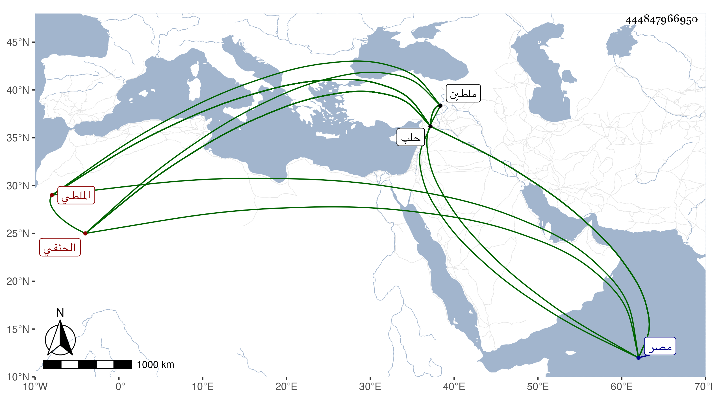

0902Sakhawi.DawLamic.ITO20230111-ara1.EIS1600.444847966950
Biography ID: 444847966950
1271
يوسف بن موسى بن محمد بن أحمد بن أبي تكين بن عبد الله الجمال أبو المحاسن بن الشرف الملطي الحنفي ويعرف بالجمال الملطي . ولد في سنة خمس وعشرين وسبعمائة تقريبا بملطية واصله من خرت برت ، وقدم حلب في شبابه وحفظ القرآن ومتونا واشتغل بها حتى مهر ثم ارتحل إلى الديار المصرية وهو كبير فأخذ عن علمائها كالقوام شارح الهداية فإنه لازمه كثيرا بالصرغتمشية وكان معيدا فيها مدة حياته فلما مات أخذ عن أرشد الدين وأمثاله . قاله العيني وكذا أخذ عن العلاء التركماني وابن هشام وسمع من مغلطاي والعز بن جماعة وحدث عن أولهما بالسيرة النبوية والدر المنظوم من كلام المعصوم وذكر أنه سمع الأولى منه سنة ستين وحصل وعاد إلى حلب وقد صار أحد أئمة الحنفية يستحضر الكشاف وتفقه على مذهبهم فشغل بها الطلبة وأفتى وأفاد إلى أن انتهت إليه رياسة الحنفية فيها مع الثروة وولاه تغرى بردى تدريس جامعه بها ثم استدعاه الظاهر برقوق على البريد لما مات الشمس الطرابلسي وقال حينئذ أنا الآن ابن خمس وسبعين فحضر من حلب في ربيع الآخر سنة ثمانمائة ونزل عند البدر الكلستاني كاتب السر إلى أن خلع عليه في العشرين منه بقضاء الحنفية فكانت مدة الفترة مائة وعشرة أيام فباشر مباشرة عجيبة فإنه قرب الفساق واستكثر من استبدال الأوقاف وقتل مسلما بنصراني بل اشتهر أنه كان يفتي بأكل الحشيش وبوجوه من الحيل في أكل الربا وأنه كان يقول من نظر في كتاب البخاري تزندق ومع ذلك فلما مات الكلستاني في سنة إحدى استقر في تدريس الصرغتمشية مضافا للقضاء وقد أثنى عليه ابن حجي في علمه وأنه لم يكن محمودا في مباشرته . وقال العيني : كان يتصدق على الفقراء في كل يوم بخمسة وعشرين درهما يصرف بها فلوسا لا يخل بذلك ولم يكن يقطع زكاة ماله مع بعض شح وطمع وتغفيل وأنه أقام بحلب قريبا من ثلاثين سنة فكان يكتب في كل يوم على أكثر من خمسين فتوى بدون مطالعة لقوة استحضاره وأنه حصل بحلب مالا كثيرا فنهب أكثره في اللنكية قال وهو أحد مشايخي قرأت عليه من كتاب البزدوي مجالس متعددة في حلب سنة ثلاث وثمانين ، واختصر معاني الآثار للطحاوي سماه المعتصر وصنف غيره ، قال وكان ظريفا لطيفا خفيفا جميل الصورة حسن اللحية مربوع القامة وإلى القصر أقرب وكذا قال ابن خطيب الناصرية أنه قرأ عليه السيرة والدرر المذكورين وأنه كان فاضلا كثير الاشتغال والإشغال مجتهدا في تحصيل العلم والمال وله ثروة زائدة حصلها بحيلة العينة ، ولما هجم اللنك البلاد عقد مجلس بالقضاة والعلماء لمشاطرة الناس في أموالهم فقال الملطي إن كنتم تفعلون بالشوكة فالأمر لكم ، وأما نحن فلا نفتي بهذا ولا يحل أن نعمل به في الإسلام فانكف الأمراء عن التعرض لذلك ثم عن ارتجاع الأوقاف والإقطاع بزعم الاستعانة بذلك في دفع تمرلنك ، وكان ذلك معدودا في حسناته مع كونه لم تحمد سيرته في القضاء وكونه نسب إليه ما تقدم ولكنه قد ثبت أن الله يؤيد هذا الدين بالرجل الفاجر ، وقال شيخنا في رفع الأصر وغيره أن المحب بن الشحنة دخل عليه فذاكره يوما بأشياء وأنشده هجوا فيه موهما أنه لبعض الشعراء القدماء في بعض القضاة وهو :
| عجبت لشيخ يأمر الناس بالتقى | وما راقب الرحمن يوما وما اتقى |
| يرى جائزا أكل الحشيشة والربا | ومن سمع الوحي حقا تزندقا |
مات في ثامن عشر ربيع الآخر سنة ثلاث وشغر منصب القضاء بعده قليلا إلى أن استقر أمين الدين بن الطرابلسي ، وذكره المقريزي في عقوده وغيرها بما قال بعض المؤرخين أن الحامل له عليه العداوة مع كونه لم ينفرد بكثير مما قاله رحمه الله وعفا عنه .
